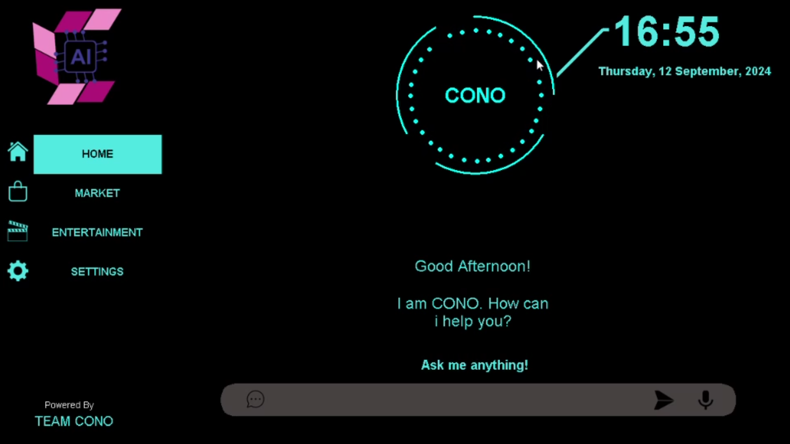

Architecture
What makes CONO-AI different
Most assistants route your voice through someone else's server. CONO-AI doesn't. Every layer — speech recognition, intent parsing, and execution — runs locally on your machine.
Even sensitive operations like WhatsApp automation never touch an external server. What you say, stays on your device — permanently.
Typical assistant: voice → cloud server → response
CONO-AI: voice → local engine → response
